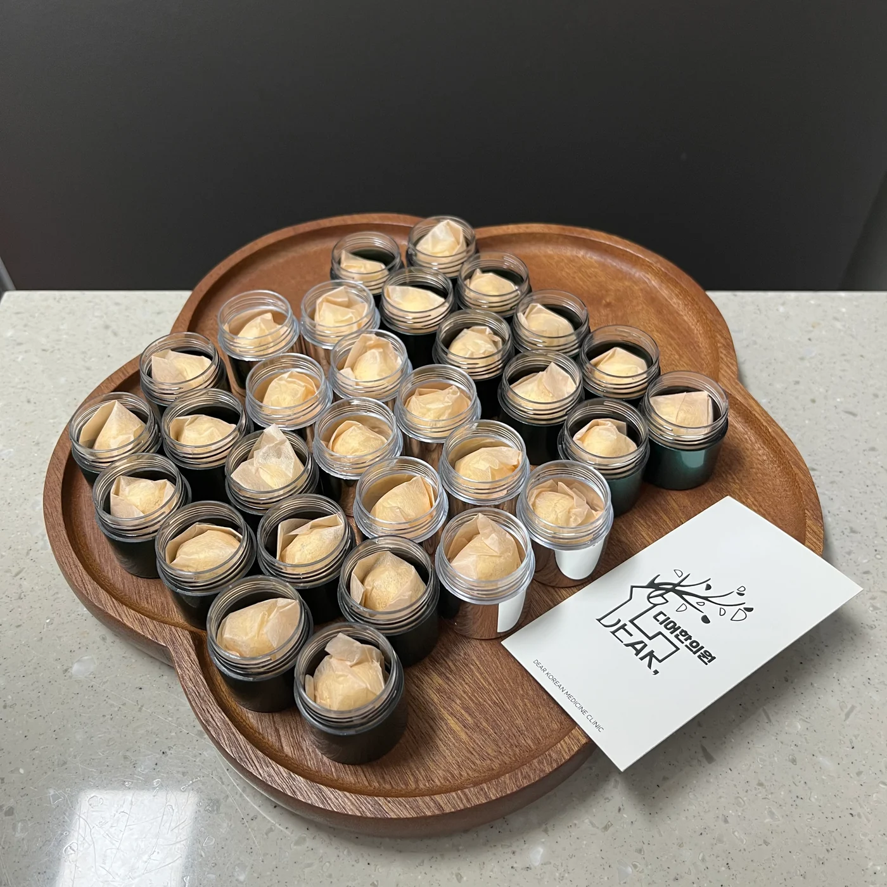
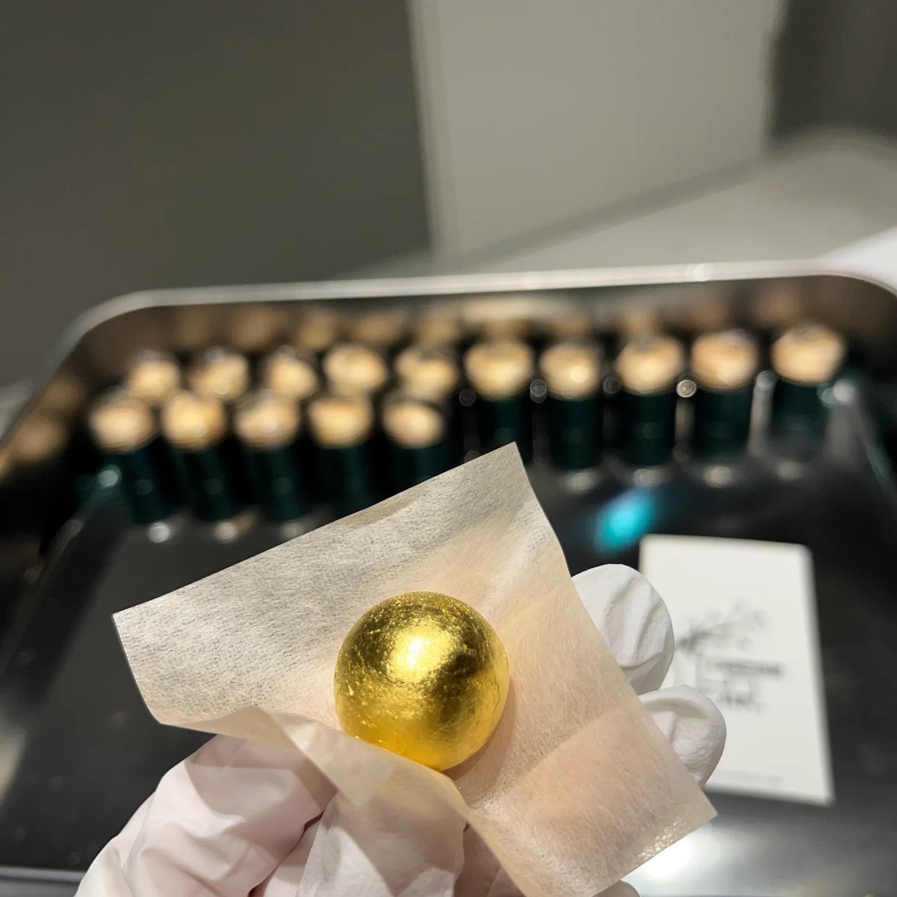

더운 여름 내내 앉아서 공부하느라 정말 지쳤을 겁니다.
9월 26일인 오늘 기준, 수능까지 54일이 남았습니다. 아직 54일이 남았다고 생각하면 길고, 지금까지 건너온 시간을 돌아보면 마지막 모퉁이에 가깝습니다. 이제 조금만 더 하면 됩니다.
남은 시간에는 코막힘·피로·잠·소화처럼 책상 앞의 집중을 끊는 불편을 줄이는 일이 중요합니다. 진료실에서 만난 두 학생의 처방도 여기에 초점을 맞췄습니다.
하루 종일 막힌 코 때문에 머리까지 띵했던 수험생
9월 초, 환절기가 시작되면서 코가 하루 종일 막히고 아침저녁이면 콧물과 재채기가 더 심해지는 수험생이 내원했습니다. 코가 막힌 상태가 오래 이어지니 머리도 띵하고, 책을 읽다가 자꾸 흐름이 끊겨 공부에 집중하기 어렵다고 했습니다.
긴 수험생활 동안 떨어진 체력과 수면의 질, 식사와 소화 상태를 확인했습니다. 콧물과 코막힘을 줄이고 수험생활로 떨어진 컨디션을 보완해 공부 중 불편에 빼앗기는 시간을 줄이는 방향으로 처방했습니다.
코막힘과 머리의 묵직함이 집중을 방해하고 있었습니다.
수험생 · 하루 종일 이어지는 코막힘 · 아침저녁 콧물과 재채기 · 머리가 띵한 느낌
환절기와 겹쳐 코막힘이 종일 지속되고, 아침저녁의 콧물과 재채기가 특히 심했습니다. 오래 막힌 코와 머리의 묵직함 때문에 학습 집중이 어렵다고 호소했습니다.
코 증상의 양상과 수면·식사·피로도를 함께 살폈습니다. 콧물과 코막힘을 줄이는 것과 수험생활로 떨어진 전반적 컨디션을 함께 고려해 처방했습니다.
한약 복용 약 3주 뒤 콧물과 코막힘이 이전보다 많이 줄었고, 머리가 띵한 느낌도 덜해 공부에 집중하기 한결 편해졌다고 확인했습니다.
※ 개인 식별 정보는 제외했습니다. 이는 한 환자의 진료 경과이며 사람마다 반응과 치료 기간이 다릅니다.
선물로 받은 공진단을 복용한 뒤, 부모님과 다시 찾아온 N수생
두 번째 학생은 삼수 중이었습니다. 외삼촌에게 디어한의원 공진단을 선물받아 복용한 뒤, 수능 전까지 한 번 더 처방받고 싶다며 부모님과 함께 내원했습니다.
“그동안 홍삼도, 고함량 비타민도 여러 번 먹어봤어요. 그런데 이번에는 공부할 때 집중되는 느낌과 몸이 가벼운 느낌이 확실히 달랐어요.”
임상에서 자주 듣는 표현입니다. 특히 긴 수험생활로 체력이 바닥까지 떨어진 학생은 원칙대로 조제한 공진단을 복용한 당일부터 “몸이 완전히 다르다”고 말하기도 합니다. 제대로 된 약재와 조제 과정이 중요한 이유입니다.
재처방 진료에서는 처음 복용했을 때 수면과 피로, 소화, 하루의 리듬이 어떻게 달라졌는지 확인했습니다. 현재 건강상태와 복용 중인 약도 다시 살핀 뒤 처방 방향을 정했습니다.
처음 복용 후 달라진 점과 현재 상태를 다시 확인했습니다.
N수생 · 외삼촌에게 공진단을 선물받아 복용 · 수능 전 재처방을 위해 부모님과 내원
디어한의원 공진단을 선물받아 처음 복용했습니다. 이전에도 시중 홍삼과 여러 비타민·영양제를 경험한 학생이었습니다.
공부할 때 집중되는 느낌과 몸이 가벼운 느낌이 예상보다 뚜렷했다고 표현했습니다. 이는 학생 개인의 주관적 경험으로 확인했습니다.
남은 수험 기간에 한 번 더 복용하고 싶어 부모님과 함께 방문했습니다. 현재의 피로·수면·식사와 복용약을 다시 살핀 뒤 처방 방향을 정했습니다.
※ 개인 식별 정보는 제외했습니다. 같은 공진단이라는 이름 아래에서도 약재와 배합, 조제 원칙에 따라 완성도는 달라집니다.
대표원장이 진료부터 원내 조제까지 직접 맡습니다.
디어한의원은 직원에게 조제를 맡기거나 제약회사의 완제품을 들여오지 않습니다. 원외탕전원에 조제 과정을 보내지 않습니다. 상담에서 학생의 이야기를 들은 김민지 대표원장이 처방을 결정하고, 약재 확인부터 분쇄·배합·환 조제까지 원내에서 직접 맡습니다.


수면·식사·소화·피로와 기존 질환, 복용 중인 약을 확인합니다.
공진단이 적절한지 판단하고 학생의 현재 상태에 맞춰 방향을 정합니다.
약재 확인과 분쇄, 배합, 환 조제까지 상담한 원장이 직접 맡습니다.
미리 대량으로 만들어 두지 않고 처방이 결정된 뒤 필요한 만큼 만듭니다.
수험생 선물·수능 전 선물을 고르기 전에 확인할 네 가지
공부를 가장 자주 끊는 불편은 무엇인가요?
코막힘·콧물·재채기, 두통, 소화불량, 불면처럼 반복되는 증상의 양상과 빈도를 먼저 확인합니다.
최근 수면과 식사, 체력은 어떤가요?
같은 피로라도 수면 부족인지, 식사와 소화의 문제인지, 다른 질환을 확인해야 하는지에 따라 접근이 달라집니다.
현재 복용 중인 약과 영양제가 있나요?
건강기능식품을 포함해 복용 중인 것을 진료 시 알려주시면 중복 섭취 여부와 적합성을 함께 살핍니다.
누가 상담하고, 처방하고, 조제하나요?
학생을 진료한 사람이 처방과 조제 과정을 어디까지 맡는지 확인해 보세요.
학생이 준비한 실력을 자신의 리듬 안에서 꺼내도록 현재의 불편과 컨디션을 세심하게 살피겠습니다.
FAQ
수험생 선물과 수능 전 한약, 자주 묻는 질문
수험생 선물로 공진단과 한약 중 무엇이 좋은가요?
콧물·코막힘·재채기처럼 구체적인 증상이 공부를 방해한다면 해당 증상과 체력, 수면, 소화 상태를 확인해 개인별 한약을 처방합니다. 누적된 피로와 컨디션 저하가 중심이라면 공진단의 적합성을 살펴 처방합니다.
수능 전 공진단은 언제부터 복용하나요?
정해진 한 가지 시점은 없습니다. 학생의 컨디션과 복용 목적, 수면과 소화 상태, 기존 질환과 복용 중인 약을 확인해 복용 여부와 기간을 개별적으로 정합니다.
환절기 비염도 공부 집중에 영향을 주나요?
지속되는 코막힘과 콧물, 재채기는 수면을 얕게 만들고 낮의 피로를 키워 학습 집중을 떨어뜨립니다. 코막힘이 오래 이어지면 입호흡과 얼굴·머리 주변의 압박감이 겹쳐 두통이나 머리가 띵한 느낌으로 이어지기도 합니다.
공진단은 언제부터 체감되나요?
임상에서는 복용 당일부터 몸이 가볍고 머리가 맑아졌다고 표현하는 환자가 적지 않습니다. 장기간 수험생활로 체력이 크게 떨어진 상태일수록 정식 약재를 원칙대로 배합·조제한 공진단에서 유의미한 컨디션 차이를 경험하는 경우가 많습니다.
디어한의원 공진단은 누가 만드나요?
디어한의원은 상담과 처방을 담당한 김민지 대표원장이 약재 확인, 분쇄, 배합, 환 조제까지 원내에서 직접 맡고 필요한 만큼 소량씩 조제합니다.
참고한 정보
- 교육부 · 2027학년도 대학수학능력시험은 2026년 11월 19일에 시행됩니다
- The burden of allergic rhinitis and allergic rhinoconjunctivitis on adolescents: A literature review
- The association between allergic rhinitis and sleep: A systematic review and meta-analysis
이 글은 실제 진료 경험을 익명화해 일반적인 건강 정보를 제공합니다. 공진단과 한약의 적합성, 반응과 치료 기간은 건강 상태와 처방에 따라 달라집니다.
 02
02 03
03